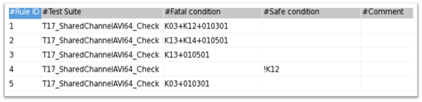

Preferences for the illegal connection combination check
In the Preferences window, you can define the safe and fatal conditions of pins for the illegal connection combination check.
- Shared instrument connected to one pin.
- Shared instrument with different relays for force and sense.
- Short pins.
Based on these rules, you can define the connection check rule by double-clicking the cells in the rule table to enter the rule ID, test suite name, fatal condition, safe condition, and comments.

- Rule ID
- The index number of the rule. It will be displayed in the report.
- Test suite
- The test suites or suite groups on which the rule will be applied.
If this cell is empty, all test suites and suite groups will be checked.
Use ! to exclude some test suites from the check.
- Fatal condition
- The condition when the relays are connected in an illegal combination. If any one of the defined conditions is met, a risk is reported.
- Safe condition
- The condition when the relay connection is safe. If the safe condition is not met, a risk is reported.
- Comment
- Note or comment to the rule.
- |: This means "or".
- (): This means a combination of multiple relay conditions.
- & or +: They both stand for "and".
- !: The relay is open. The relay without this sign is closed.
Example
Examples of fatal or safe conditions
K01+K02+K03
The relays K01, K02, K03 are all closed.
K03&(!K01|!K02)
The condition when K03 is closed and K01 or K02 is open.
To modify the contents of the cells, you can edit the table with the commands in the context menu.

Or, click the buttons at the top right of the table.

If you want to reuse the configurations in the table, click the Export button to save them as a CSV file. You can import the saved file in another configuration by clicking the Import button.
Functional changes
- Introduced in SmarTest 7.4.3